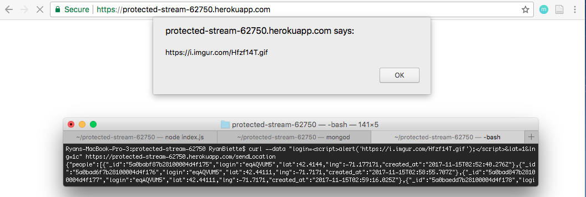
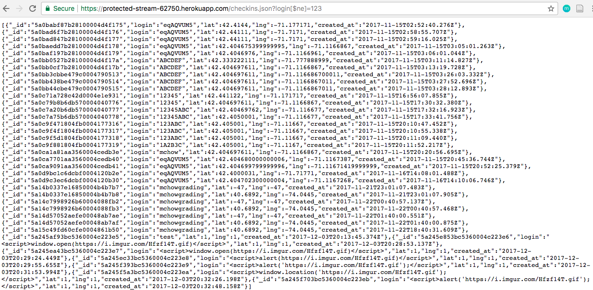

Biette Cyber Security Consultants LLC. was hired to assess the security vulnerabilities and privacy issues with protected-stream-62750, a heroku hosted web application. The product is a service that locates the user and shows the location of other users also using the application. In addition, the user interface displays historical landmarks within one mile of the user and provides detailed information about each site. Lastly, the closest landmark is connected by a line rendered on the screen to the user's current location. The results of the study are described in this report.
These findings were attained by using curl and looking through the source code. By looking for the most common security vulnerabilities as defined by OWASP, issues were tested for and found. The focus started on easy to implement attacks and then the scope was broadened to accommodate for future considerations.
This app must undergo a series of security changes immediately. The changes should be reasonably attainable for your engineering team to address. Many websites and applications suffer from the same issues. The names of your 3 most important security vulnerabilities are Cross Site Scripting a.k.a XSS (where an attacker can redirect to other webpages, changing your website, or taking over user's sessions), Insufficient Attack Protection (there is minimal protection from memory attacks which can fill up your memory allowance and either cost you more money or crash the app), and Sensitive Data Exposure (where your data is not private or encrypted so users can be connected to their data and that data can be easily accessed by other users).
Thank you for choosing Biette Cyber Security Consultants LLC. We hope to work with you again.
The location of the vulnerability is in the POST route of /SendLocation.
This constitutes a high level of severity because this vulnerability would allow hackers to insert scripts to lead to inappropriate websites, trick users into downloading viruses and other negative results.
This issue was detected using a curl command to post a payload of data containing a script that would show an alert upon loading the homepage (see image below). 
To resolve this issue, the program should never trust user data. The data input should be sanitized to mitigate the ability of users to insert scripts that will be run by the web browser the application is running on without checking them. This also shows a vulnerability around database injection.
For example, to sanitize data something along the lines of the following code could be added before the data is added to the database:
yourString.replaceAll("[^\\w\\s]","")
The location of the vulnerability is in the /checkins.json route.
This is constitutes a high level of severity because the privacy of the users data is compromised. A user can insert a small change "[$ne]" to the URL and gain access to everyone elses data (see image below where login "123" could see everyone else's data).If this feature was allowed for the general userbase, it would be a large issue. The general privacy of the data is not high and thus the protection of the user is low.
A possible resolution of this issue is to implement encryption to protect user's data. For example, the login could be encrypted so that the location information could not be tied to it. The cost of this would be low and could potentially be implemented through a hash function.
Future considerations may include allowing a user to hide their location or delete their previous locations. Location information can be sensitive and nefarious users of the app may use other people's locations for bad things (such as robbing houses, etc.). The cost of implementation would be somewhat low, but the only cost would be time.
Additionally, a future consideration may be to continue to use nonidentifiable usernames as this is a privacy concern. The cost of this feature is minimal as there is no additional work to be done.
Lastly, it is important to note that security requires constantly checking for holes and patching them. This application was not secure and this report is not exhaustive. There are definitely more vulnerabilities other than the three mentioned in detail and those mentioned in the conclusion.
For this project, stackoverflow.com articles and OWASP materials were used. Additionally, Teacher's Assistants were consulted (Michael).